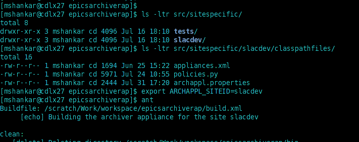

It is unlikely that the features of the archiver appliance match your requirements exactly over a period of time.
Here are some of the existing ways that you can customize the archiver appliance (without forking from the existing source tree).
Site specific builds
Policies
Site specific properties
Key Mapping
Persistence
Storage Plugins
NIO2
Type systems
ConfigService
If you identify other ways in which we can allow for customization of the archiver appliance to suit your needs, please let the collaboration know and we'll try to accommodate.
Site specific builds
The archiver appliance offers you the ability to customize the WAR files generated by the build in these ways.
The src/sitespecific folder contains materials specific to your site.
You can use the environment variable ARCHAPPL_SITEID to control which set of sitespecific files are included in the generated WARS.
When you set this environment variable, you should see a message Building the archiver appliance for the site YourSite
If this variable is not set, by default, we use the material in the tests site.
The quickstart package archappl_vx.x.x.tar.gz available in the Downloads is also built to the tests site.
The files in the src/sitespecific/YourSite/classpathfiles are added to the WEB-INF/classes of the generated WAR files and should be accessible in the code using servletContext.getResourceAsStream("/WEB-INF/classes/<<fileName>>")
The policies.py for your site is discovered this way
You can generate WAR with policies.py specific to your site by setting the ARCHAPPL_SITEID.
Or you can unpack the WAR files within the container and override the default policies.py with your own during deployment.
If you do not set the ARCHAPPL_APPLIANCES environment variable, the appliances.xml is discovered in a similar fashion.
There is also a site specific properties file called archappl.properties that is discovered in a similar fashion. The properties in this file are used to control some of the other customizations of the archiver appliance.

Using the ARCHAPPL_SITEID to customize the contents of the generated WAR files.
The archiver appliance uses Apache Ant for its builds.
As part of the regular build process, you have the opportunity to call an ant script that is as part of the src/sitespecific folder.
The build.xml in the src/sitespecific is called (if it exists) after the compile and staging tasks and before the WAR is packed.
This lets you replace default collateral (like images, phone numbers in messages etc) with your own collateral in the generated WAR file(s).
For simple site specific content changes like replacing the images or the contact text in the home page, please see this document.
Policies
As outlined in the details page, the archiver appliance support a wide variety of configurations.
Not only that, we also support configuration on a per PV basis.
We avoid exposing all of this complexity to the end user (the one who is requesting PVs to be archived) by using policies to provide intelligent defaults.
Policies are contained in a python/jython script called policies.py that is typically located in the WEB-INF/classes of the mgmt webapp.
At a very high level, when users request PVs to be archived, the mgmt+engine webapps sample the PV to determine event rate, storage rate and other parameters.
In addition, various fields of the PV like .NAME, .ADEL, .MDEL, .RTYP etc are also determined.
All of these parameters are passed to the policies.py python script as a dictionary argument to a method in policies.py called determinePolicy; see the javadoc for more details.
This method is expected to use all of this information to make decisions on various archiving parameters including storage locations, storage technologies used etc and return these decisions as another dictionary.
For example, the resulting dictionary contains a field called dataStores which is an array of StoragePlugin URL's that can be parsed by the StoragePluginURLParser.
This is converted into a sequence of StoragePlugin's that is used like so
The engine webapp writes data into the first StoragePlugin in the sequence, i.e. dataStores[0]
The ETL webapp schedules data transfers from one StoragePlugin to the next in the sequence according to their PartitionGranularity's
When servicing a data retrieval request, the retrieval webapp retrieves data from all of the datastores and then combines them using a merge/dedup operator.
Optionally, as part of a policy, we can also archive fields in addition to the VAL field.
That is, one can establish a blanket policy that says something like For all ai's, in addition to the .VAL field, also archive the .HIHI, .LOLO etc
These fields are stored as part of the data for .VAL field.
For more details and an example of a policy file, please look at the src/sitespecific/tests/policies.py that is shipped as part of the tests site.
In addition to the determinePolicy method, there are a few more methods that need to be defined. These include
getPolicyList -- This returns a list of available policy names.
getFieldsArchivedAsPartOfStream -- This returns a list of fields that are to be archived as part of the stream.
Site specific properties
There is a site specific properties file called archappl.properties that is typically present in WEB-INF/classes of all the webapps.
This contains various configuration elements that are common to all machines in the cluster and probably common to all deployments of the archiver appliance in your infrastructure.
One of the advantages of having your site specific properties checked into the source repository is that as the system evolves and we add new configuration elements, default values for these new configuration elements can be added to archappl.properties of all the sites.
The configuration elements present here are configuration decisions that are made during the initial scoping of your archiving project; so, please do look at these configuration elements and make choices appropriate to your installation.
Key Mapping
The archiver appliance stores data in chunks that have a well defined key.
The key is based on
The PV Name
The time partition of the chunk
For example, using the default key mapping strategy, data for the PV EIOC:LI30:MP01:HEARTBEAT for the timeframe 2012-08-24T16:xx:xx.xxxZ on an hourly partition is stored under the key EIOC/LI30/MP01/HEARTBEAT:2012_08_24_16.pb.
Data for the same PV in a daily partition is stored under the key EIOC/LI30/MP01/HEARTBEAT:2012_08_24.pb for the day 2012-08-24Txx:xx:xx.xxxZ.
To use the default key mapping strategy, it is important (for performance reasons) that the PV names follow a good naming convention that distributes the chunks into many folders - see the Javadoc for more details.
If the key/file structure reflecting the PV naming convention feature is not important to you, you can choose to use an alternate key mapping strategy by implementing the PVNameToKeyMapping interface and setting this property to name of the implementing class.
Persistence
By default, the configuration for the archiver is stored in a relational database (using connections obtained from JNDI) as key/value pairs.
Alternate mechanisms for persisting archiver configuration are possible; see the ConfigPersistence interface.
To save your configuration in a different location, create an implementation of this interface and use the ARCHAPPL_PERSISTENCE_LAYER environment in your startup scripts.
Storage Plugins
The starting point for using an alternate storage technology is to create implementations of the StoragePlugin interface and register them in StoragePluginURLParser.
In addition to the StoragePlugin interface, additional optional interfaces facilitate additional functionality
ETLSource -- The lets a StoragePlugin act as a source of data in the ETL process.
ETLDest -- The lets a StoragePlugin act as a destination of data in the ETL process.
StorageMetrics -- The lets a StoragePlugin provide metrics that are displayed in the UI and participate in capacity planning.
Writing a new StoragePlugin does take some effort but with this separation, you should be able to support a wide variety of storage technologies. For more details, please see the Javadoc.
NIO2
The StoragePlugin, PlainPBStoragePlugin can be viewed as a chunking storage plugin.
It chunks data into clean, well-defined time-partitions (instead of individual samples) and various business processes in the archiver appliance understand these time-partitions and deal with them efficiently.
Each chunk has a well defined key and one can choose to store a chunk in any storage provider that provides block storage.
The PlainPBStoragePlugin uses Java NIO2 as the storage API.
Java NIO2 has a documented mechanism for developing custom file system providers.
Using custom NIO2 file system providers, one can store the chunks generated by the PlainPBStoragePlugin using storage technologies like
Database BLOBS
Any key/value store (for example, SciDB)
Other technologies that may be more appropriate
To add custom NIO2 file system providers for use in the archiver appliance, please look at the JavaDoc for our version of Java's Paths.
Type systems
The archiver appliance uses Google's ProtocolBuffers as the serialization scheme.
There are plenty of other algorithms that offer the same functionality, of great interest is the serialization scheme used in the EPICS V4 protocol.
Support for alternate serialization mechanisms is possible by adding support for alternate type systems.
Please contact the collaboration if you'd want to consider using alternate serialization mechanisms.
ConfigService
All of the configuration in the archiver appliance is handled thru implementations of the ConfigService interface.
Each webapp has one instance of this interface and this instance is dependency injected into the classes that need it.
If all else fails, you can create your implementation of the ConfigService and register it in the servlet context listener.